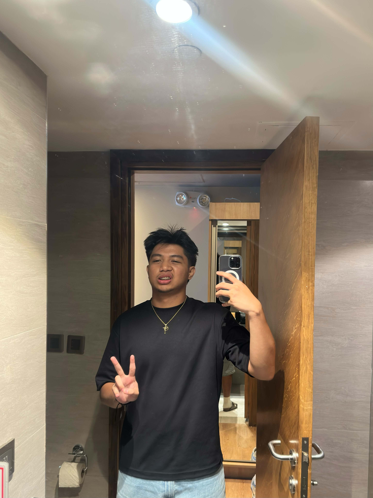

Vince Masillones
Freelance Web Developer (Puhon)
About Me
Hello! My name is Vince Martin R. Masillones. I am a 3rd Year BSIT College Student interested in learning new things. I enjoy working on projects that allow me to improve my creativity, technical skills, and problem solving abilities.
My interests include computers, programming, cybersecurity, photography, video editing, and other technology related activities. I hope to continue improving my skills and gain experience that will help me in my future career.
My Interests
- Information Technology
- Cybersecurity
- Photography
- Video Editing
- Technology
Educational Background
I am currently taking a Bachelor of Science in Information Technology in Xavier University Ateneo de Cagayan. My studies allow me to learn about programming, networking, cybersecurity, databases, and other areas of information technology.
My Goals
My goal is to become a skilled IT professional and continue developing my knowledge in technology and cybersecurity. I also want to create useful projects and gain practical experience that I can use in my future career.
My Skills
HTML
I can create basic webpages using HTML.
CSS
I can use CSS to style and organize webpages.
Java Programming
I have experience creating basic Java programs.
Networking
I understand basic computer networking concepts.
Video Editing
I can edit videos and create simple visual content.